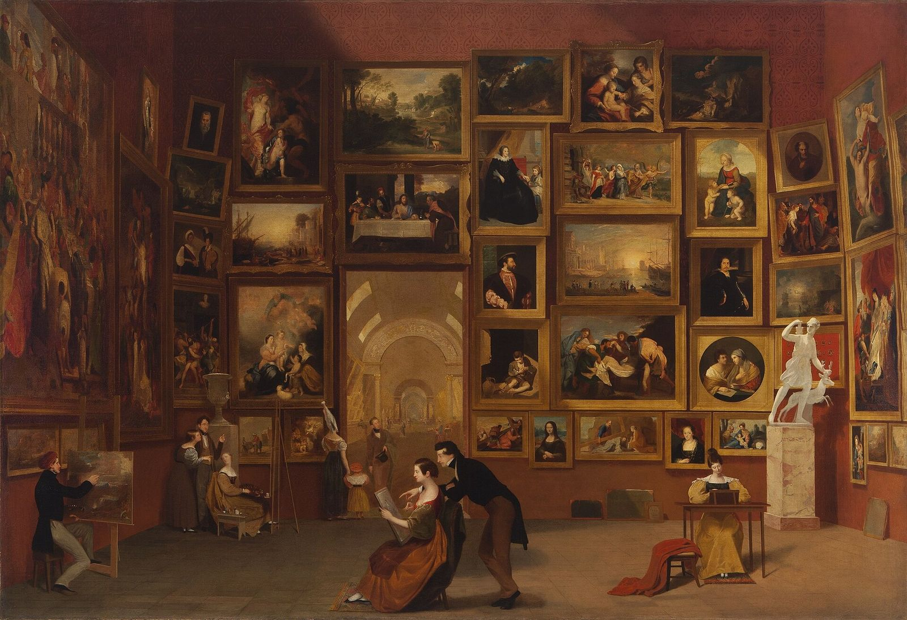

{{code}} Portfolio
{{heading}}
This portfolio collects my work for {{code}}. It covers the culture and art of the Early Modern World through the 19th Century, along with personal application essays that connect what I studied to my own life.
{{status}}Early Modern World to 19th Century

Part 1
Early Modern World
The culture and art of the Renaissance, from about 1400 to 1600.
Part 2
19th Century
The culture and art of the 1800s. These pages are in progress.
Part 3
Personal Application Essays
Essays where I apply what I studied to my own life, work and faith.
Personal application
{{post:loved-or-feared:title}}
{{post:loved-or-feared:summary}}
Personal application
{{post:choosing-mercy-over-justice:title}}
{{post:choosing-mercy-over-justice:summary}}
Personal application
{{#unplaced}}
{{post:religion-morality-and-choosing-what-s-right:title}}
{{post:religion-morality-and-choosing-what-s-right:summary}}
Personal application
{{/unplaced}}
{{post:*:title}}
{{post:*:summary}}
Hero image: Wikimedia Commons (public domain).
← Back to the blog